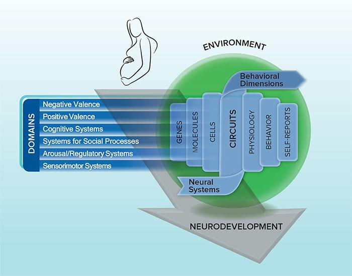

4 DSM-5의 도래와 정신의학의 딜레마
Advent of DSM-5 and Dilemma of Psychiatry
4.1 DSM-5
4.1.1 기존 체계와의 차이
본서가 쓰여지고 있는 현재, 미국과 우리나라를 비롯한 전 세계 각국에서 조현병의 진단은 DSM-5를 기준으로 내려지고 있다.1 DSM-5는 DSM-IV 발표 이후 거의 20년이 지난 2013년에 발표되었다. DSM-5의 조현병 진단 기준은 이전 체계의 골격을 유지하고는 있지만, 세부사항 속에는 많은 고민과 토론을 통해 다다른 새로운 질병 개념을 반영하고 있다. 주목할만한 변화를 손꼽는다면 아래와 같다.
1 DSM-5는 기존 DSM과 차별화를 꾀하기 위해, 그 동안 로마자로 판본을 구분하던 관행(DSM-I, II, III, IV)을 깨고 아라비아 숫자로 표기하였다.
첫째, 더 이상 슈나이더의 일급 증상(Section 2.3)에 특별한 지위를 부여하지 않는다. DSM-IV까지만 해도, 일급 증상은 하나만 있어도 진단을 내릴 수 있었다. 그러나 이어진 역학 연구에서, 일급 증상이 조현병에 국한되어 나타나는 것도 아니고, 일반적인 망상/환청과 일급 증상 사이에 분명한 구분이 있는 것도 아니며, 일급 증상이 있다고 해서 치료 반응이나 경과가 달라지는 것도 아니라는 것이 명백해졌다.[1–3] 따라서 일급 증상이 있더라도 A 기준에 해당되는 다른 증상이 동반되어야 진단을 내릴 수 있게 되었다.
| A. Two (or more) of the following, each present for a significant portion of time during a 1-month period (or less if successfully treated). At least one of these must be (1), (2), or (3): | |
|---|---|
| 1 | Delusions |
| 2 | Hallucinations |
| 3 | Disorganized speech (e.g., frequent derailment or incoherence) |
| 4 | Grossly disorganized or catatonic behavior |
| 5 | Negative symptoms (i.e., diminished emotional expression or avolition) |
둘째, A 기준의 다섯개 증상 중 적어도 하나는 망상, 환각, 와해된 언어여야만 한다. DSM-IV에 따르면, 필요한 두 개의 증상이 행동 증상과 음성 증상이어도 진단이 가능하다. 그러나 DSM-5에 와서는 반드시 양성 증상이 하나 이상 포함되어야 한다. 이는 양성 증상이 조현병 병태생리의 핵심은 아닐 지라도, 정확한 진단을 위해서는 반드시 필요함을 강조하는 부분이다.
셋째, DSM-IV 까지 반세기 이상 이어져 내려온 아형(subtype)의 구분이 사라졌다. 이 역시 아형 구분이 임상적으로 큰 의미가 없다는 연구결과를 반영한다. 조현병의 다양성은 아형으로 표현되지 못하며, 질병 경과에 따라 한 아형에서 다른 아형으로 변화하는 것도 매우 흔하다. 또한 아형과 치료 반응, 예후 사이에 별 상관관계가 없다는 것도 이유 중 하나이다.[4–6]
넷째, 경과를 구분할 때 초발 환자에 대한 언급이 유달리 강조되었다. 물론 경과에 대한 기록은 DSM-III부터 덧붙여졌다. DSM-III는 잔류형 조현병에 국한하여 아만성(subchronic), 만성(chronic), 관해상태(in remission)를 구분하였다. DSM-IIIR에서는 동일한 경과 구분이 잔류형 뿐만 아니라 조현병 전체에 적용되었다. DSM-IV에서는 개념이 바뀌어 삽화성(episodic), 연속성(continuous), 단일 삽화 후 관해상태(single episode in remission)로 나누어진다. 그러던 것이 DSM-5에 들어오면, 초발성(first episode), 반복삽화성(multiple episodes) 그리고 연속성(continuous)으로 변화된다. 역시 초발 환자를 강조하고 있음을 엿볼 수 있는데, 이는 조기 정신증(early psychosis)에 대한 열띤 학문적/임상적 관심을 반영한 것으로 보인다.
4.1.2 DSM이 가져온 정신의학의 변화
애초에 DSM은 질병의 정체와 그 원인에 대한 이해가 부족한 상태에서, 어떻게든 미국의 정신과 의사들이 동일한 환자에게 동일한 진단을 내릴 수 있도록 하자는 취지에서 만들어졌다. 연구 측면에서도, 신뢰도가 높은 진단 기준은 균일한 환자 집단을 모으기 위한 선결과제이다. 통계 매뉴얼이라는 이름에서 분명히 드러나듯이, DSM은 어디까지나 역학 자료를 수집하기 위한 잠정적 기준으로 출발하였고, 지금도 그러한 목적에 가장 적합하다.
그러나 DSM 그리고 이와 성격을 같이 하는 ICD가 의료 행위에 미친 영향은 실로 방대하다. 20세기 들어 의료는 막대한 비용이 드는 행위가 되었다. 물적, 인적 자원을 효율적으로 사용하기 위해, 재정을 지원하는 국가나 보험 회사들은 모든 의료 행위에 DSM 혹은 ICD 진단명을 붙일 것을 강요했다. 지급하는 비용은 각 진단명에 따라 산정되었고, 각각의 질병은 비용이 많이 드는 질병과 그렇지 않은 질병으로 차별화되었다. 증거중심 의학(evidence-based medicine)의 기치를 내건 연구자들은 각각의 진단명에 유효한 치료를 솎아내기 시작하였다. 모든 임상연구는 DSM 진단을 기준으로 이루어졌으며, 얻어진 연구 자료는 증거중심 의학의 기반 증거로 채택되면서, 정확한 진단과 그에 합당한 치료라는 의학의 패러다임을 확고히 하였다. 보험제공자들은 환자의 진단명과 행해진 치료가 재단한 듯 딱 맞아떨어지지 않으면 치료비 지급을 거부할 수 있었다. 최근에 우리나라에서도 정책적으로 추진되고 있는 신포괄수가는 아예 진단명을 중심으로 청구할 수 있는 의료비 자체를 고정시켜 버렸다
진단이 중요해지면서 DSM과 ICD의 위상은 더더욱 높아져만 갔다. 진단 매뉴얼에 의존하는 것은 의료 행위 뿐만이 아니다. 자격증이나 취업 제한 요건, 양육권 소송에서부터 민사적 분쟁, 범죄 행위에 대한 면책 등 의료 외적 부분도 진단 매뉴얼에 의지하기 시작하였다. 의학 교육 역시, 각 질환에 대한 진단 기준을 외우고 이를 실제 증례에 어떻게 적용하는 지를 배우는 것부터 시작하게 되었다.
이러한 추세를 보면, 진단 매뉴얼이 마치 법전의 지위에 올라선 것처럼 보여지기도 한다. 법이든 진단매뉴얼이든 전문가들 사이에 약속한 바를 적어놓은 것이란 점에서는 서로 다르지 않다. 그러나 사람들은 진단매뉴얼도 법과 마찬가지로 사람들 사이의 약속일 뿐이며, 필요에 따라 새로 만들어질 수도, 폐기될 수도 있다는 점을 쉽게 망각한다. 체크리스트처럼 열거되어있는 진단기준에 맞기만하면, 더 이상 자세한 환자의 정신병리나 심층심리를 파악하지 않아도 된다고 여긴다. 어떤 상황에 처해서, 또는 어떤 삶을 살아오다가 이런 병리현상을 나타내게 되었는지와는 상관없이, 기준에 해당되면 진단을 내릴 것이요, 그렇지 않으면 진단을 내릴 수 없을 것이다.
정상과 질병의 경계 역시 DSM이 끊임없이 비판받고 있는 이유 중 하나이다. 보험제공자로부터 진료비를 환급받기 위해선 어쨌든 간에 진단이 필요하다. 따라서, 인간에게 심적 고통을 주는 다양한 상태에 대해 상담과 처방을 행하고, 그에 상응하는 보상을 받기 위해선, 그 모든 심적 고통 하나하나에 진단명을 붙일 수 밖에 없다. 따라서 DSM-I에서106 개였던 진단명은, DSM-III에서는 265개로 늘더니, DSM-5에서는 298개가 되었다.[7]
위에 나열한 현실적 문제들보다 더욱 중요한 것은, 애초에 정신의학에서는 “질병”이라는 개념이 부자연스럽다는 것을, 새로 정신의학에 입문하는 초심자들이 종종 망각한다는 점이다. DSM-I에서 “반응(reaction)”이라는 용어를 사용하고, DSM-III에서 “질환(disease)” 대신 “장애(disorder)”를 고집한 이유는, 정신의학의 진단명이란 환자의 고통에 이름을 붙이는 수단이지, 그것 자체가 실재하는 자연적 종을 의미하는 것이 아님을 분명히 하기 위함이다. 그러나 DSM을 교재로 삼아 교육받은 정신과 의사들은, 진단 기준(criteria)을 질병의 정의(definition)과 혼동하기 쉽다.[8] 본서의 주제인 조현병은, 지난 수백년 동안 수많은 사람들이 그 정체를 밝히기 위해 애써왔으나 여전히 그 실체를 어둠 속에 감추고 있는 그 무엇이다. 그것이 하나인지, 여럿인지, 공통된 원인이 있는지, 모든 환자마다 원인이 다른 것인지, 아직도 풀리지 않은 의문이 무수히 많다. 따라서 이러한 미지의 존재를 DSM 진단기준 몇 개로 잡아 가둘 수 있다고 믿는 것은 커다란 오류에 지나지 않는다. (진단명의 존재론적 위치에 대해선 3장 1-3절 참조)
4.1.3 DSM-5와 개혁의 시작
2013년에 발표된 DSM-5의 개정작업을 맡은 위원들은 막중한 책임과 야심찬 각오를 지니고 이 일에 뛰어들었다. 그들은 DSM에 쏟아지는 비판을 익히 인식하고 있었고, 변하지 않으면 점점 더 왜곡이 심해진다는 위기 의식을 느끼고 있었다. 개정 작업을 총괄한 Kupfer2는 DSM이 표방해온, 무이론적(atheoretical), 기술적(descriptive) 태도가 오히려 정신의학의 발전을 저해하고 있다고 판단하였다. WKL 분류체계가 목표로 삼았던 것처럼 진단이 최대한 생물학적 병인과 접근해 있어야만, 그러한 진단체계를 사용한 연구가 조금씩이라도 진리에 다가서는데 보탬이 될 수 있을 것이다. 따라서 위원회는 무이론적 접근 원칙으로부터 서서히 병인론적 (특히 생물학적) 접근원칙으로, 패러다임 전환을 이루고자 하였다.[9] 이는 DSM이 처음 만들어졌을 때로부터 반세기가 넘는 세월이 흐르는 동안, 부단한 학문적 발전으로 말미암아 질병의 정체를 밝힐 토대가 왠만큼 조성되었다는 믿음의 발로기도 하였다.
2 David Kupfer (1941~): 미국의 정신과 의사. 피츠버그 대학의 정신과 교수로 있으면서 DSM-5 개정위원회 위원장을 역임하였다.
그러나 DSM-III를 탄생시켰던 Spitzer(Section 3.2.2)나 DSM-IV 개정을 이끌었던 Frances3는 이러한 패러다임 전환에 대해 냉소적인 반응을 보였다. 특히 Frances는 이러한 전환이 시기상조의 과도한 야심일 뿐이며, 무모한 변경은 중단되어야 한다고 목소리를 높였다. 그는 DSM의 기술적 진단(descriptive diagnosis)은 원인론과는 공존할 수 없으며, 현재의 과학발전의 수준으로는 정신질환의 원인을 밝힐 수도 없다고 하였다. 병인론의 이해에 있어 근본적인 도약이 없는 한 패러다임 전환은 불가능하며, 그 전까지 진단 체계의 기본 접근 원칙을 바꿔선 안 된다는 것이다.[10,11]
3 Allen Frances (1942~): 미국의 정신과 의사. DSM-IV 개정을 이끌었으나 이후 DSM-5가 발표된 이후에는 오히려 DSM의 무분별한 팽창이 정상과 질병 사이의 경계를 없애버릴 것이라 비판하였다. 그는 삶에서 겪을 수 밖에 없는 정상적인 걱정, 좌절이 질병이 되어서는 곤란하며, 분명한 생물학적 기반을 지닌 상태만 질병으로 인정해야 한다는 입장을 밝혔다. 대표적인 저서로 “Saving Normal: An Insider’s Revolt against Out-of-Control Psychiatric Diagnosis, DSM-5, Big Pharma, and the Medicalization of Ordinary Life”, “Twilight of American Sanity: A Psychiatrist Analyzes the Age of Trump”가 있다.
DSM-5를 개정하는데는 14년의 세월이 걸렸다. 패러다임 전환을 통해 전혀 새로운 모습의 진단 매뉴얼을 만들겠다는 취지로 시작되었으나, 막상 발표된 결과물은 이전 판과 크게 달라지지 않았다.[12] 차원적 접근(dimensional approach)을 표방했다고 하나, 이는 부상되는 모델 항목에 참고항목으로 실렸을 뿐이며, 병인론과 관련된 변화도 치매를 비롯한 몇몇 진단에 그쳤다.[13] 패러다임의 근본 전환도 없었으며, 조현병 진단 기준이 크게 바뀌지도 않았다. 그럼에도 불구하고 DSM-5가 이전 판에 비하여 더욱 거센 비판에 부딪힌 것은, 생물학적 병인론을 녹여냈다고 자신하는 바람에 DSM 진단 항목을 자연적 종으로 여기게 된 사람들이 점점 더 늘어났다는 점이다. 즉 내용은 기술적이고 조작적인 진단기준에 머물러 있으면서, 마치 WKL 분류체계처럼 병인론과 가장 근접한 진단 기준이라는 기치를 내걸었으니, 많은 사람들을 오도하고 있다는 것이다. DSM-5는 변화와 혁신을 담고자 애썼으나, 한쪽에서는 준비도 안 된 채 설익은 생물학적 병인론을 추가시켰다고 비판받고, 다른 한쪽에서는 축적된 생물학적 지식을 충분히 담아내지 못한다고 공격당하였다.[14,15]
이상과 같은 DSM을 둘러싼 비판을 종합하면, 연구자, 의사뿐 아니라 행정 담당자까지 DSM에 너무나 많은 역할을 기대하고 있음을 엿볼 수 있다. 연구자들은 DSM이 질병의 본질을 알려주는 가이드가 되어야 한다고 기대하며, 의사와 보험제공자는 효과적인 치료법을 정하고 예후를 판정하는 지침이 되어야 한다고 여긴다. 역학조사가나 정책입안자에게는 정신질환의 실태와 국민보건에 차지하는 비중을 판가름하는 잣대가 되어야 하며, 제약회사에게는 신약의 적응증을 따내는 지침이 된다. 이렇게 서로 다른 맥락에서 혼동되어 사용되기 때문에, 동일한 진단기준이 맥락에 따라 전혀 엉뚱한 뜻으로 해석되기도 하고, 아예 사용되어서는 안 되는 경우도 생기게 된다. DSM은 애초에 “질병”이 아니라 “환자”를 분류하기 위한 기준으로 탄생되었다. 진단기준은 질환과 질환의 경계를 분명히 하고자 하는 것이 아니라, 눈 앞의 환자가 어떤 질환을 앓고 있다고 판단하는 것이 실용적인가를 묻는다. DSM에서 정해놓은 조현병이라는 개념은 미지의 존재에 임시방편으로 만들어높은 표지판 중 하나이다.[16]
Kendler[17]는 정신의학에서의 진단은 다음 3가지 의미를 지니고 있음을 명쾌하게 설명하고 있다. 첫째, 사실주의(realism)는 진단이 인간의 주관적 지각이나 판단과는 상관없이 독립적으로 존재하는 자연적 종이라는 입장이다. 의학에서 사용되는 질병(disease)이라는 용어는 사실주의에 입각해 있다. 둘째, 실용주의4는 진단이 치료를 결정하고 예후를 예측하는데 실질적으로 도움이 된다면, 그 진단이 세계의 법칙에 부합하는 아닌지와는 굳이 상관하지 않는다는 주의이다. 셋째, 구성주의5는 반정신의학이 정신의학을 비판하는 이유 중 하나이다. 이 입장에서, 진단은 사회적 필요에 의해 구성원들이 합의한 내용이라는 것이다. 예를 들어 다중 인격장애, 외상후 스트레스 장애, 월경전 불쾌 증후군 등은 상당 부분 정치적, 사회적 압력에 의해 만들어졌다.
4 실용주의(pragmatism): 미국의 Charles Sanders Peirce , William James, John Dewey 등에 의해 제안된 철학사조. 인간의 이성은 형이상학적 개념을 설명, 재현, 파악하기 위해 있는 것이라기보다는, 실제 생활에서 예측, 문제 해결, 행동을 하기 위한 도구라고 논하였다. 따라서 철학 이론의 가치는 그 유용성과 성과를 기준으로 평가해야한다고 보았다.
5 구성주의(constructivism): 이탈리아 철학자인 Giambattista Vico는”안다”(to know)라는 것은 “어떻게 설명할 줄 안다(to know how to make)”라고 설명했다. 즉 절대적인 진리란 없고, 오직 지식은 사전 경험을 바탕으로 개인이 구성하여, 어떻게 활용할지를 아는 것 뿐이다. 여기서 출발하여 과학적 지식 역시, 현실을 이해하고자 애쓰는 공동체가 이해의 틀을 구성하여 여기에 합의한 것이라는 견해이다. 즉 현실은 인간의 정신으로부터 독립되어 있지만, 지식은 항상 인간적이고 사회적인 구성에 지나지 않는다.
정신과 의사들은 의료계의 구성원으로서 사실주의적 이상을 버릴 수 없다. 그러나 실제 임상에서는 대부분 실용주의 원칙에 따라 진료 행위를 하고 있음을 인정해야 한다. 하지만 의학 외의 압력으로 인해 구성주의적 원칙에 의해 진단명을 남발하고 있지는 않은지 스스로 되돌아볼 필요가 있다.
4.1.4 DSM의 미래와 조현병 개념의 변화
DSM-5이 붙여놓은 논란의 불꽃은 정신질환 진단분류 체계에 대한 자성의 목소리가 높아지는 계기가 되었다. Cuthbert6와 Insel7은 DSM의 한계를 절감한 나머지, 미국 국립정신건강연구원(National Institute of Mental Health, NIMH)의 후원을 얻어 Research Domain Criteria (RDoC)의 개발과 보급에 나선다.[14,18] RDoC의 연구개발은 2009년에 시작되었으며, 2015년 Insel이 NIMH를 떠난 이후 기세가 한풀 꺾이긴 했지만, Cuthbert의 지휘 하에 현재까지 지속되고 있다. Cuthbert와 Insel은 범주화된 질병이라는 존재가 오히려 뇌과학의 발전을 저해한다고 보았다. 뇌 기능과 좀더 직접 연결된 영역으로 부정적 감정, 긍정적 감정, 인지 체계, 사회적 기능, 각성 및 생체리듬 이렇게 5개 영역(domain)을 골라내었다. 각각의 영역들은 유전자와 세포 단계 로부터 행동 및 자가 보고에 이르는 단계까지 서로 다른 층위에서 연구될 수 있다.[19] 이렇게 두 축(영역 x 단계)으로 분류하면 일종의 매트릭스가 만들어지게 되는데 이를 RDoC Matrix라고 한다.(그림 4.1) 조현병과 같은 정신질환은 이 매트릭스가 특정한 패턴으로 변화한 것으로 이해할 수 있다. 매트릭스를 구성하는 각 요소들의 변화는 연속적이며, 그 변화 패턴도 범주로 나누기 어렵다. 따라서 고전적인 질병과 질병을 구분하는 것은 큰 의미가 없으며, 나아가 정상과 비정상을 구분하는 절대적 기준도 없다.
6 Bruce Cuthbert: 미국의 심리학자. 국립정신건강연구원(NIMH)에서 RDoC 개발 초기부터 현재까지 담당 부서의 책임자를 맡고 있다. 2015년부터 2016년에는 Insel의 사퇴 이후 NIMH 국장의 직무대행을 맡기도 하였다.
7 Thomas Insel (1951~): 미국의 신경생물학자이자 정신과 의사. 2002년부터 2015년까지 NIMH 국장을 역임하였다. RDoC 기획을 통해 DSM 체계와 경쟁하였으나, 2015년에 갑자기 Google의 생명과학 연구팀으로 이직하였다. 이후에는 벤처 사업가로 활약하고 있다.

RDoC가 성공적이었다고 여기기에는 아직 문제가 많고, 향방을 지켜보아야 한다.[20,21] 그러나 정신질환을 뇌를 기준으로 분류해야한다는 기조에는 큰 변함이 없다.[22] Kandel8은 “모든 정신 현상은 뇌의 현상이며, 정신기능의 질환은 생물학적 질환이다. 뇌가 아니라면 어디서 정신질환이 비롯되었 겠는가?”라고 말하였다.[23] 이러한 생각을 지닌 생물학적 환원주의 학자들은 인간의 모든 심리기능은 뇌를 중심으로 한 생물학적 기반을 갖고 있다고 믿는다. 2016년부터 NIMH를 이끌고 있는 Gordon은 모든 정신기능은 신경회로의 작용에 기반을 두고 있기 때문에, 이러한 회로를 찾아내고, 관측하며, 조작함으로써 정신질환의 정체를 밝히거나 치료방법을 찾아낼 수 있을 것이라 주장하였다.[24]
8 Eric Kandel (1929~): 미국의 신경생물학자이자 정신과 의사. 컬럼비아 교수로 재직하면서 인간의 기억과 신경가소성에 대한 연구를 하였고, 2000년에는 노벨 생리/의학상을 수상하였다.
RDoC가 정신기능의 개개 요소를 중요시하였고, 이후 이를 뒷받침하는 구체적인 신경회로의 기능과 오작동이 강조되면서, 고전적인 진단명은 그 존재 의의를 조금씩 잃게 되었다. 질병분류학을 접근하는 연구자의 태도를 크게 둘로 나눈다면, 통합론(lumper)와 분리론(splitter)이 될 것이다. 전자는 마치 단일정신병의 개념처럼 모든 현상은 하나요, 다만 정도차이만 있을 뿐이라고 주장할 것이며, 후자는 다양한 경우의 수가 각각 독자적인 정체성을 지닐 것이라 주장할 것이다.[25]
급부상하는 진단의 새로운 개념화는 통합론과 분리론의 싹을 모두 포함하고 있다. 차원적 접근(dimensional approach)이나 정상과 비정상은 정도 차이에 불과하다는 식의 접근은 통합론에 가깝다고 볼 수 있다. 정신질환은 범주적으로 서로 구분되는 것이 아니라 연속선 상에 존재하는 어떤 것이라는 관점이기 때문이다. 그러나 이는 동시에 분리론이기도 하다. 개개 환자의 정신기능과 신경회로의 상태를 정밀하게 측정하고, 이에 맞춰 각기 다른 치료를 행하게 된다면 환자 한 사람 한 사람이 서로 다른 진단을 받는 것과 마찬가지이다. 이는 궁극적인 분리론이다.[26] RDoC와 신경회로 이론은 최근 인기를 끌고 있는 정밀의학9을 이끄는 견인차가 되려고 분투하고 있다.[18,26] 만약 기술적으로 환자 개개인에 대한 맞춤 의학이 완성된다면, 현재 우리가 알고 있는 정신과 진단명은 역사의 뒤안길로 사라질 지도 모른다.
9 정밀의학 (precision medicine): 의학은 진단을 통해 환자를 접하지만, 실상 동일한 진단이 내려진 환자라도 개인의 환경, 유전, 생물학적 특성, 생활 습관 때문에 서로 다른 증상, 서로 다른 치료결과를 낳는다. 따라서 진단 뿐 아니라 이러한 다면적 정보를 모두 고려하여, 개개인에 맞춤 치료를 시도하려는 연구 및 의료 행위를 말한다. 유전체 정보를 기반으로 약물을 선택하고 용량을 조절하는 약물유전체학은 정밀 의학의 한 부분이다.
4.2 정신의학의 딜레마
중개의학(translational medicine)이란 실험실에서 얻은 연구의 성과를 질병의 진단 및 치료를 위해 활용하는 과정이라 말할 수 있다. 종양학에서 시작된 이 개념은 실제로 실험적 암치료를 임상에 조속히 도입하는데 혁혁한 성과를 거두었다. 정신의학 역시 급격히 발전하는 뇌과학의 지식을 실제 임상에 도입하고자 중개 정신의학(translational psychiatry)의 역할이 기대되었으나, 실상 정신의학만큼 둘 사이의 간극이 큰 의학분과도 그리 많지 않다.[27] 따라서 온갖 부풀어오른 기대감에도 불구하고, 빠른 시간내에 정신과 치료가 혁신적으로 변모할 것 같지도 않다.
정신의학은 19세기에 생겨난 학문으로 그 뿌리를 자연과학과 인문/사회과학 둘 다에 두고 있다. 애초에 인간의 심적 고통이란 인문학적 통찰을 통해 이해하는 것이지, 물리/생물학을 통해 설명하는 것이 아니다.10 젊은 시절의 프로이트가 “과학적 심리학 초고”11를 통해 다다르려 했던 것은 비록 심리학과 신경과학의 통합이었지만, 그가 평생을 바쳐 이룩한 것은 심적 현상을 비교적 과학적으로 해부하는 전혀 새로운 방법론이었다. 프로이트를 비롯한 선배들의 전통을 물려받는 정신과 의사들은, 과학자들이 측정(measure)하지 못하는 정신현상을 공감을 통해 평가(evaluate)하는 방법을 수련한 사람들이다.[29] 이렇게 쉽게 조화되지 않는 학문 영역에 양다리를 걸친 정신의학은, 한편으로는 발달하는 뇌과학을 속히 접목시켜야 한다는 압박감과 더불어, 다른 한편으로는 객관적 과학이 다가가지 못하는 인간의 고통이라는 고유한 문제를 위로해야 한다는 짐을 지고 있다.
10 독일 철학자인 William Dilthey는 1894년 펴낸 저서 “Ideas for a Descriptive and Analytic Psychology”에서 설명(explanation)과 이해(understanding)를 구분하였다. 인간은 지적 과정을 통해 설명하지만, 공감을 비롯한 마음의 모든 능력을 동원하여 이해한다.[28]
11 과학적 심리학 초고(Project for a Scientific Psychology): 30대 후반이던 프로이트가 동료 Wilhelm Fliess와 나눈 서간문에 기초한 저작. 프로이트 사후인 1950년에 출간되었다. 본능, 에고의 기능, 억압 등과 같은 심리적 기전을 뇌의 물리적, 생물학적 기전으로 이해하려는 시도가 담겨져 있다. 심리학을 신경학과 연결하고자 한 첫 시도는 좌절되는데, 프로이트는 당시의 지식 수준으로는 이러한 작업을 더 이상 진행할 수 없다고 하였다.
따라서 테크놀로지의 진보를 통해 정신질환 치료를 한단계 진일보시켜야 하는 것도 맞지만, 동시에 테크놀로지에 묻혀 인간성을 상실해가는 현대 사회의 아픔도 이해해야만 한다. 이러한 분열된 숙명은 단순히 생물-심리-사회 모델(3-1절 참조)을 주창한다고 해결될 문제가 아니다. 여전히 정신과 의사는 “조현병”과 싸우는 것이 아니라, 조현병에 걸린 “환자”를 돌보고 있다. 질병만 나으면 자기 인생은 스스로 걸어가도록 맡겨도 되는 일반 의학 환자와는 달리, 조현병 환자는 증상을 가라앉힌다 해도 인생 자체를 살펴보아 주어야 한다. 이러한 본분은 기술의 발전이 해결할 수 없는 문제이다.